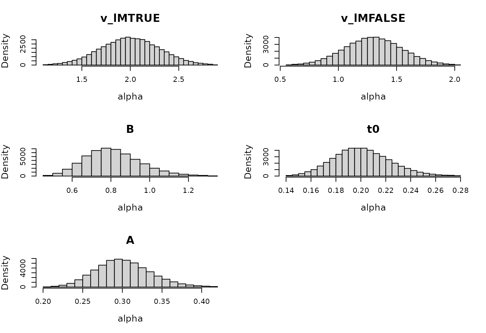

Simulation-based Calibration
Niek Stevenson
Source:vignettes/Simulation-based-Calibration.Rmd
Simulation-based-Calibration.RmdIntroduction
Simulation-based calibration(SBC) is a technique used to validate and calibrate Bayesian estimation methods and models (Talts et al. 2018). SBC checks whether a model correctly accounts for uncertainty and whether the posterior distributions it produces are consistent with the true data-generating process. First we outline how to perform SBC in theory, after which we describe our experiences with SBC in EMC2, which will also illustrate how to perform SBC for your own model.
How to SBC
Here we briefly outline the steps to performing SBC, for more detail we refer the reader to Talts et al. (2018).
1. Specify the Probabilistic Model
- Define the Bayesian model you’re working with. This includes specifying the prior distribution for the parameters and the likelihood function that connects the data to the parameters.
- For example, suppose you have a model with a set of parameters and observed data such that and .
2. Simulate Parameters and Data
- Sample Parameters: Draw a large number of sets of parameters from the prior distribution .
- Simulate Data: For each set of parameters , simulate a dataset from the likelihood .
3. Compute Posterior Distributions
- For each simulated dataset , compute the posterior distribution using your Bayesian model.
4. Evaluate the Rank Statistics
- For each simulated dataset, determine where the set of true parameters ranks in the posterior samples of . In EMC2 we thin the posterior to be equal to the effective sample size. The rank is essentially the number of posterior samples that are less than the true .
- Normalize the ranks to lie between 0 and 1. This is your rank statistic.
5. Check Uniformity
- Aggregate the rank statistics across all simulated data-sets. If your model is well-calibrated, the ranks should be uniformly distributed because each posterior should correctly reflect the uncertainty about the parameter.
- Plot the rank statistics. Here we present both histograms of the rank statistic and plots that compares the empirical cumulative rank to the cumulative density function of a uniform distribution.
Non-hierarchical SBC in EMC2
EMC2 allows for both hierarchical and non-hierarchical estimation. Given the desirable statistical and estimation properties of hierarchical models, we normally recommend to use hierarchical models. However, given that estimating hundreds of models is quite time consuming and practically unfeasible without a computational server, we recommend running SBC on non-hierarchical models for typical applications. Here we use the LBA and DDM to illustrate non-hierarchical SBC. Later we’ll also perform hierarchical SBC for the LBA, DDM, RDM and LNR. First we clear our workspace and load EMC2
Compression
Before we start with the SBC, we want to give a quick note on data
compression. By default EMC2 compresses RTs to bins of 20ms,
since typical lab set-ups do not allow response times to be measured
with a higher resolution. However, generated data is not subject to the
same physical constraints. Therefore, and to avoid biases, compression
is turned off in the SBC functions. To turn on compression regardless,
you can set compression = TRUE, and set the resolution
using rt_resolution = 0.02 (for example) in the
run_sbc function, which will speed up computation but
potentially introduces biases.
LBA
To run SBC we specify a design and a prior for the model.
EMC2 assumes normal priors on the parameters for
non-hierarchical models. Thus, some parameters are transformed to better
match the normal prior and to satisfy the assumption of the normal
distribution to have full support on the real line. To check the
parameter transformations we use ?LBA .
matchfun <- function(d) d$S == d$lR
design_LBA <- design(factors=list(subjects=1,S=c("left", "right")),
Rlevels = c("left", "right"),
matchfun = matchfun,
formula =list(v~lM,B~1, t0~1, sv~1, A~1),
constants=c(sv=log(1)),
model = LBA)
prior_LBA <- prior(design_LBA, type = "single",
pmean = c(1.3, .7, log(.8), log(.2), log(.3)),
psd = c(.2, .1, .1, .05, .05))Now we plot the prior, with map = TRUE (the default) to
see the implied prior on the transformed parameters.
plot(prior_LBA)
Next we can simply call run_sbc with our specified
design and prior. We can use ?run_sbc to see the
description of the function arguments. The trials argument refers to the
number of trials per cell. Since we have an 2-level S factor in our
design (and all other designs used), we will thus simulate 200 trials
per data set. Also note that by default run_sbc will estimate till the
point-scale reduction factor is smaller than 1.1 and the minimum
effective sample size of any of the estimated parameters is larger than
100.
SBC_LBA_single <- run_sbc(design_LBA, prior_LBA, replicates = 500, trials = 100, plot_data = FALSE,
iter = 1000, n_post = 1000, fileName = "SBC_data/SBC_LBA_single.RData",
cores_per_chain = 30)In non-hierarchical models, setting cores_per_chain = 30
will estimate 30 simulated data-sets simultaneously. Which is feasible
on the computational server we used. But given that the LBA is so quick
to compute, non-hierarchical SBC is also feasible on a personal
computer. It is recommended to specify fileName to store
intermediary results in case of crashes.
EMC2 also comes with plotting functions that allow us to visualize the results. First we can plot the standard histograms, with a number of equally spaced bins between 0 and 1 of the normalized rank statistic.
plot_sbc_hist(SBC_LBA_single, bins = 10)
Here the gray lines indicate the 2.5, 50 and 97.5% percentile of where n samples from a uniform distribution are expected to fall. As we can see most of the bins are are nicely within these bounds and no clear pattern emerges. However, this visualization very much depends on bin size, as pointed out by Talts et al. (2018). Therefore EMC also comes with plots that visualize the difference in the empirical cumulative density function (ecdf) and the cumulative density function of a uniform distribution.
plot_sbc_ecdf(SBC_LBA_single)
In these dinosaur eggs the blue area visualizes the 95% area of expected cumulative values. As with real eggs, the observed line, (i.e. the cracks) should obviously lie somewhere on the egg. For an explanation and guide to interpretation to these plots we recommend the following article https://hyunjimoon.github.io/SBC/articles/rank_visualizations.html. In the remainder of this article we’ll use these plots to visualize SBC results.
DDM
Next we test non-hierarchical for the DDM as well. Initial results actually showed bias in the estimation of non-decision time and non-decision time variability. Whereas we first based our DDM implementation on the rtdists package (Singmann et al. 2022). The bias led us to explore alternative packages, which eventually brought us to the WienR package (Hartmann and Klauer 2023). This package not only offers faster likelihood evaluations but also eliminates the bias observed in the SBC results. Hence as of CRAN release 2.1.0 we adapted our code to instead use the WienR C++ routines.
For the SBC itself we used the following prior and design settings, again being mindful of the required transformations.
#?DDM
design_DDM <- design(factors=list(subjects=1,S=c("left", "right")),
Rlevels = c("left", "right"),
formula =list(v~1,a~1, t0~1, s~1, Z~1, sv~1, SZ~1, st0 ~ 1),
constants=c(s=log(1)),
model = DDM)
prior_DDM <- prior(design_DDM, type = "single",
pmean = c(1, log(.8), log(.3), qnorm(.5), log(.1), qnorm(.05), log(.05)),
psd = c(.15, .15, .1, .05, .15, .15, .15))
SBC_DDM_single <- run_sbc(design_DDM, prior_DDM, replicates = 500, trials = 100,
fileName = "SBC_data/SBC_DDM_single.RData", cores_per_chain = 30)Next we plot the ECDF difference plot again.
plot_sbc_ecdf(SBC_DDM_single)
We see minor biases in a and sv, but nothing too concerning. To double check, we repeated the analysis, and confirmed that the bias is not systematic.
Hierarchical SBC
Besides being a friendly introduction to doing SBC in EMC2, this post also serves as a test of unbiased estimation of the four main classes of EAMs included in EMC2. However, depending on the research question, running non-hierarchical SBC might suffice as it is far more computationally efficient.
The approach to running hierarchical SBC is very similar to running non-hierarchical SBC. However we can now write the model of data as . Here is the prior on the group-level parameters. The generated data for one sample is still generated from , but with generated from , with .
Prior structure
Although in the paper we rely on the prior structure defined by Huang and Wand (2013), which is also the default
in EMC2, this prior structure has a lot of mass near zero for
the group-level variance parameters (a half-t distribution).
From a Bayesian posterior view these prior structures are attractive
(Gelman 2006), since they do not
artificially increase the variance estimates and thus err on the safe
side. However, in SBC data-generation this means we sample many
data-sets with no individual differences. Unfortunately, for numerical
reasons EMC2 cannot recover a true zero on group-level
variances. Thus, EMC2 will struggle to converge and will
identify some level of individual differences, although they may be very
small. Therefore, the type = "standard" prior structure
results in biased SBC variance estimates. Therefore, in SBC we recommend
using type = "diagonal-gamma", which as the name suggests
uses gamma distributions for the variance parameters, which have less
mass at zero.
Nevertheless we believe the standard prior is not problematic in real data, since it will always contain at least some degree of individual differences (only a true zero cannot be recovered). Therefore it will remain the default prior in EMC2 as of now, though the type “diagonal-gamma” is available to the user as well.
LBA
Now we dive into hierarchical SBC for the LBA model. The prior structure we chose was as follows. Here we have to be extra mindful of choosing a prior that ensures plausible generated data, since there’s a double propagation of induced variance through the prior. First through the prior on the standard deviation of the group-level mean, but also through the prior on the group-level variance.
n_subjects <- 30
#
matchfun <- function(d) d$S == d$lR
design_LBA <- design(factors=list(subjects=1:n_subjects,S=c("left", "right")),
Rlevels = c("left", "right"),
matchfun = matchfun,
formula =list(v~lM,B~1, t0~1, sv~1, A~1),
constants=c(sv=log(1)),
model = LBA)
prior_LBA <- prior(design_LBA, type = "diagonal-gamma",
mu_mean = c(1.3, .7, log(.8), log(.2), log(.3)),
mu_sd = c(.2, .1, .1, .05, .05),
shape = 10,
rate = c(.2, .2, .2, .1, .1))We can also plot what the implied prior range is of the subject-level parameters:
plot(prior_LBA, selection = "alpha")
To actually run SBC, we can use the same function as before, now also specifying how many subjects we want to have in the hierarchical model
SBC_LBA <- run_sbc(design_LBA, prior_LBA, replicates = 500, trials = 100,
n_subjects = n_subjects, fileName = "SBC_data/SBC_LBA.RData", cores_per_chain = 30)We can also plot the results again using the
plot_sbc_ecdf function. It will now generate a set of ECDF
difference plots for the hierarchical variance ranks and the
hierarchical means ranks:
plot_sbc_ecdf(SBC_LBA)

As we can see good results for the hierarchical SBC and no noticable bias in the group-level mean or variance parameters.
DDM
We also tested hierarchical SBC for the seven parameter DDM. We again chose priors carefully here to match realistic behavioral data.
n_subjects <- 30
design_DDM <- design(factors=list(subjects=1:n_subjects,S=c("left", "right")),
Rlevels = c("left", "right"),
formula =list(v~1,a~1, t0~1, s~1, Z~1, sv~1, SZ~1, st0 ~ 1),
constants=c(s=log(1)),
model = DDM)
prior_DDM <- prior(design_DDM, type = "diagonal-gamma",
pmean = c(1.2, log(.8), log(.3), qnorm(.5), log(.1), qnorm(.05), log(.05)),
psd = c(.15, .15, .1, .05, .1, .1, .15),
shape = 10,
rate = c(.2, .2, .2, .1, .1, .1, .1))In contrast to the other models, we generated 200 (instead of 100) trials per person per cell, since with 100 trials the model sometimes did not converge or was very slow to converge. We also only generated 250 data sets due to the large computational costs associated with running a full hierarchical DDM.
SBC_DDM <- run_sbc(design_DDM, prior_DDM, replicates = 250, trials = 200,
n_subjects = n_subjects, fileName = "SBC_data/SBC_DDM.RData", cores_per_chain = 30)The group-level means look unbiased, the group-level variance of the between trial variability parameters is overestimated a bit. We note that the effective sample size for these parameters is also very small (although minimum a 100), which can bias the results (Talts et al. 2018).
plot_sbc_ecdf(SBC_DDM)

RDM
For completeness and as a proof of correct implementation we also test hierarchical SBC for the RDM with the following model definition and prior structure.
n_subjects <- 30
matchfun <- function(d) d$S == d$lR
design_RDM <- design(factors=list(subjects=1:n_subjects,S=c("left", "right")),
Rlevels = c("left", "right"),
matchfun = matchfun,
formula =list(v~lM,B~1, t0~1, A~1, s ~ 1),
constants=c(s=log(1)),
model = RDM)
prior_RDM <- prior(design_RDM, type = "diagonal-gamma",
mu_mean = c(1.4, .3, log(1.5), log(.2), log(.3)),
mu_sd = c(.05, .1, .1, .05, .05),
shape = 10,
rate = c(.1, .2, .2, .2, .1))
SBC_RDM <- run_sbc(design_RDM, prior_RDM, replicates = 500, trials = 100,
n_subjects = n_subjects, fileName = "SBC_RDM.RData", cores_per_chain = 30)We again note that SBC shows no bias in the hierarchical RDM model:
plot_sbc_ecdf(SBC_RDM)

LNR
Lastly, we run hierarchical SBC for the LNR with the following specification
n_subjects <- 30
matchfun <- function(d) d$S == d$lR
design_LNR <- design(factors=list(subjects=1:n_subjects,S=c("left", "right")),
Rlevels = c("left", "right"),
matchfun = matchfun,
formula =list(m~lM,s~1, t0~1),
model = LNR)
prior_LNR <- prior(design_LNR, type = "diagonal-gamma",
mu_mean = c(-.7, -.5, log(1), log(.2)),
mu_sd = c(.2, .1, .1, .05),
shape = 10,
rate = c(.2, .2, .2, .1))
SBC_LNR <- run_sbc(design_LNR, prior_LNR, replicates = 500, trials = 100,
n_subjects = n_subjects, fileName = "SBC_LNR.RData", cores_per_chain = 30)For the LNR hierarchical SBC also shows no considerable bias:
plot_sbc_ecdf(SBC_LNR, layout = c(2,2))